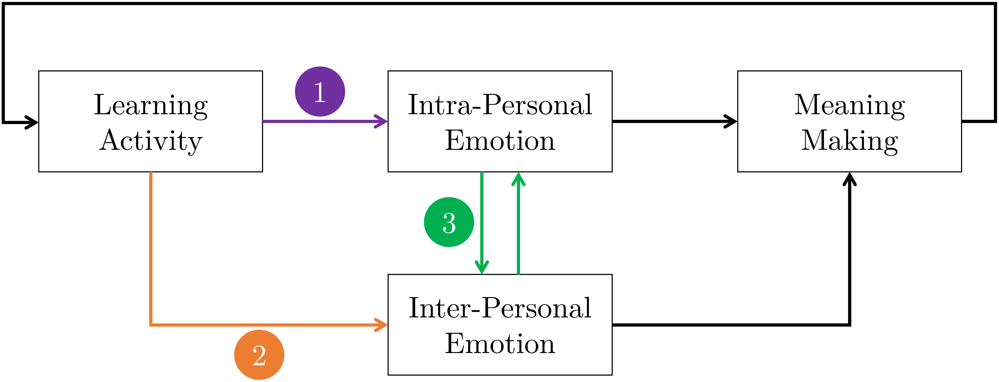
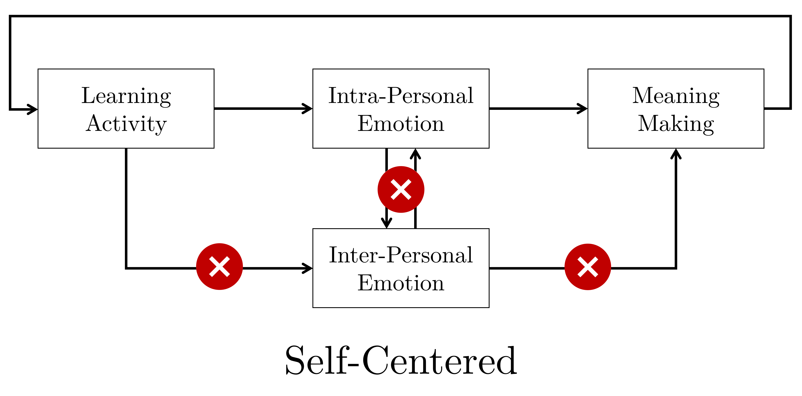
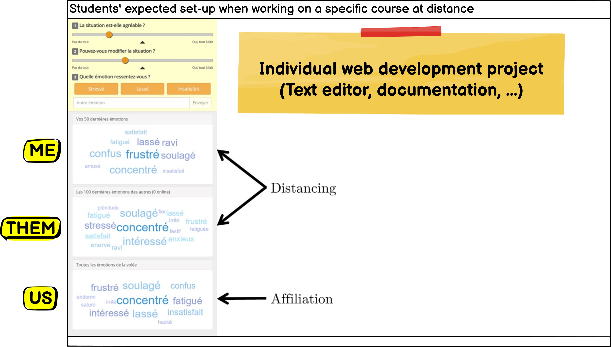

Implementation and Assessment of a Multipurpose Appraisal-Driven Emotion Awareness Tool Based on Self-Report
Mattia A. Fritz
TECFA, Université de Genève
The rise of affectivism
[...] given the undeniable impact of affective sciences on our
models of brain, mind, and behaviour, it seems relevant to ask
today whether we are now in the era of affectivism.
— Dukes et [63] al., 2021
Learning Cognitive Social Affective
Brackett et al., 2019; Lavoué et al., 2020; Pekrun & Linnenbrink-Garcia, 2014Emotional Awareness

Original figure: functional abstract model of
emotional awareness derived by the literature review (Fritz, 2023,
p. 50)
-
Modularity
All or only part of the functions -
Opinionated
Self-Report, Appraisal-Driven, Moment-to-Moment -
Open Science/Education
Transparency, replication, sharing, ...
Presentation plan
Tool's Core
Chapters 4, 5 and 6Appraisal-Driven Emotion
 Adapted figure: the dynamic architecture of the
Component Process Model (Scherer, 2010)
Adapted figure: the dynamic architecture of the
Component Process Model (Scherer, 2010)
Probabilistic link
If one knows the results of an individual’s event
appraisal on major checks, one can
approximately predict [...] what
label the person is likely to use
— Scherer, 2009
Appraisal
Lexicalized emotion
Scherer & Fontaine, 2019; Scherer & Meuleman, 2013
Scherer & Fontaine, 2019; Scherer & Meuleman, 2013
Open Science/Education
 Toolbox to
create, share, credit instances of an EAT according to interests and
needs.
Toolbox to
create, share, credit instances of an EAT according to interests and
needs.
Experimental factor
Chapter 7Disentangle awareness
One main limitation of this
study is the difficulty in disentangling the effect of
reflecting upon one’s own emotions from the effect of sharing
one’s emotions with the partner.
— Molinari, Chanel, et al., 2013
Different use of and access to emotional awareness



Experimental task

N = 48 students and professionals (29 women, 19 men), aged 18 to
55 (M = 37.3, SD = 10.0)
Experimental plan

Hypotheses: Mutual > Partner > Self in
expressing, seeking and processing emotional information.
Emotion expression
M = 13.8 (5.7) expressed emotions (N = 35)

| pairwise | estimate | p.value |
|---|---|---|
| Self - Partner | -0.17 [-6.28, 5.95] | 1.00 |
| Self - Mutual | -3.14 [-8.60, 2.31] | 0.34 |
| Partner - Mutual | -2.98 [-8.90, 2.95] | 0.44 |
Information seeking
M = 67.3 (34.9) visits in perceiving AOI (N = 35)

| pairwise | estimate | p.value |
|---|---|---|
| Self - Partner | -34.53 [-66.80, -2.26] | 0.03 |
| Self - Mutual | -43.73 [-72.51, -14.94] | < 0.01 |
| Partner - Mutual | -9.20 [-40.46, 22.07] | 0.75 |
Information processing
M = 51.4 (32.5) seconds looking at perceiving AOI (N = 35)

| pairwise | estimate | p.value |
|---|---|---|
| Self - Partner | -40.20 [-71.03, -9.37] | 0.01 |
| Self - Mutual | -31.81 [-59.31, -4.31] | 0.02 |
| Partner - Mutual | 8.39 [-21.47, 38.26] | 0.77 |
Ad-hoc scale
Chapter 8Emotion Awareness Usefulness
| # | Dimension | Item |
|---|---|---|
| 1 | Frequency | I used the tool frequently (e.g. every time I worked for the course) |
| 2 | Affordance | The use of the tool prompted me to share my emotions |
| 3 | Social Presence | The use of the tool allowed me to feel less lonely during remote learning periods |
| 4 | Self-Understanding | The use of the tool allowed me to better understand my emotions |
| 5 | Understanding Others | The use of the tool allowed me to better understand the emotions of my colleagues |
| 6 | Self-Other Comparison | The use fo the tool allowed me to compare my emotions with those of my colleagues |
| 7 | Self-Regulation | The use of the tool allowed me to regulate my emotions |
Longitudinal plan

33 students (M = 32.96, SD = 7.78) of two successive cohorts in
STIC I (Fritz & Schneider, 2019).
Perception of usefulness

N = 798 ratings from 30 students on a 1 to 10 scales at:
Expectation, Demo, Halfway, and
Final.
Psychometric indicators

| \(\omega_h\) | \(\alpha\) | \(\omega_{tot}\) | Uni |
|---|---|---|---|
| 0.6 | 0.86 | 0.9 | 0.86 |
Data-Driven Assessment
Chapters 5, 9 and General discussionSecondary Data Analysis
-
N = 1097 expressed emotions
Two original studies in the thesis, plus usability test (Fritz, 2015) -
Fair predictive accuracy
Around 4 out of 5 expressed emotions accepted one of the three suggestions/buttons -
Representativeness of lexicalized emotion
9 out of 10 expressed emotions used one of the 20 labels of the affective space -
System Usability Scale = 73.5 (12.8)
Below 80 target (Lewis & Sauro, 2018), but above 67.8 (NA) from Feidakis et al. (2014)
Computational model on trial


Valence and Control not independent
\(M_\rho\) = 0.47 (0.43)
See also Molinari et al. (2016) or Scherer & Fontaine (2019)
N-Dimensional Spaces
Two dimensions are not necessarily the best way to represent emotions (Scherer & Fontaine, 2019)Lessons learnt
Chapter 10Lessons/Suggestions
-
Justify emotion theory in pedagogical terms
What is the benefit of implementing an emotion structure/theory into the EAT? -
Justify number and kind of lexicalized emotions
Use of taxonomy? Parsimony or variety? Precise description or folk interpretation? -
Test alternative or competing forms of awareness
Within emotional awareness and across types of awareness (e.g. knowledge, social, ...) -
Provide measure(s) of perception of usefulness
Usability? Technology Acceptance Model? Validated ad-hoc scale?
Thank you for your attention !
Presentation created with
Reveal.js.